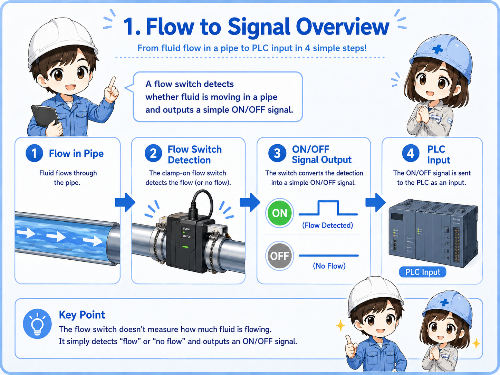
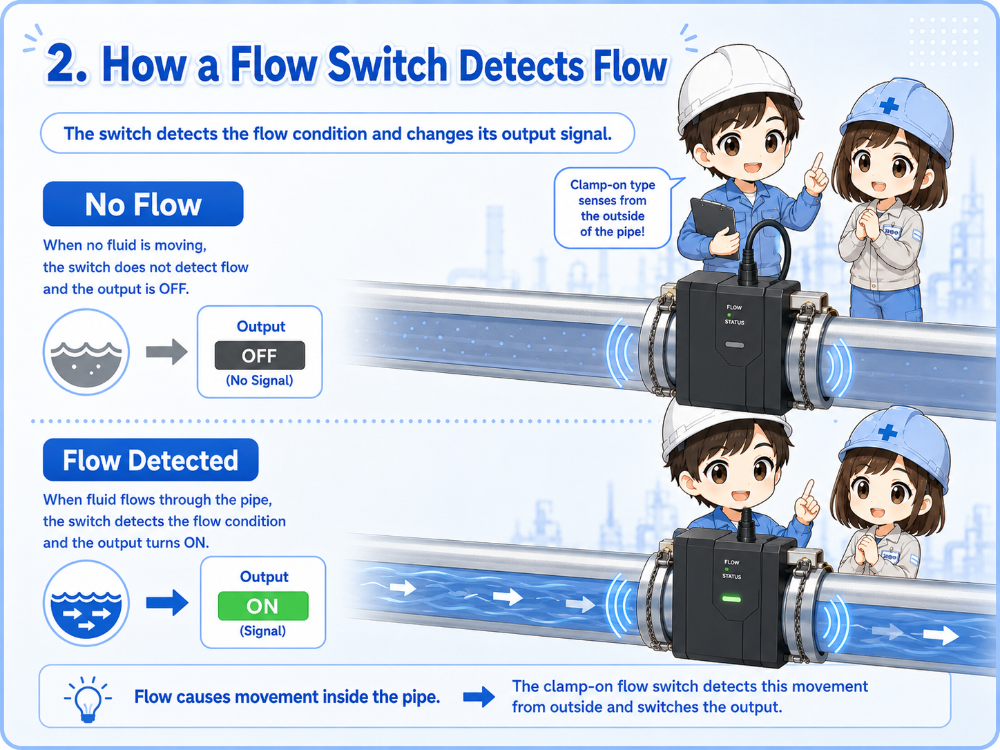
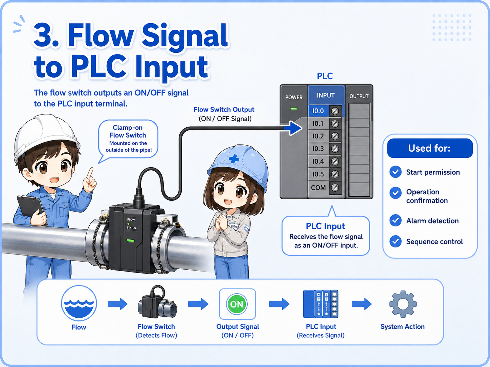
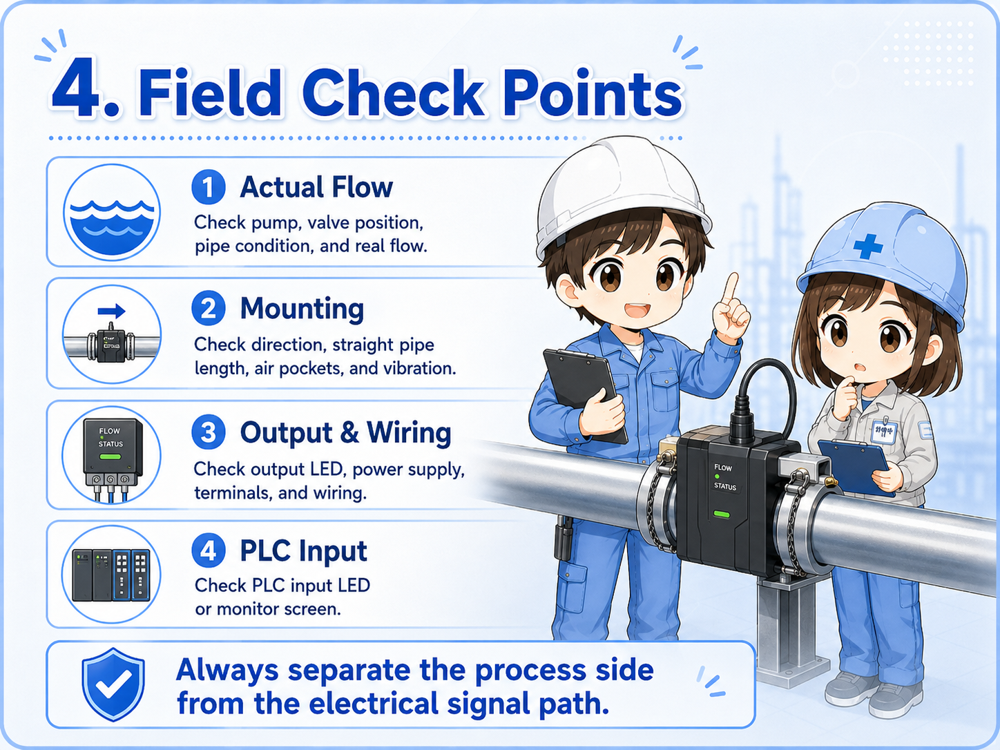

1. Basic idea: detecting whether flow exists
A flow switch is used when the machine needs to know whether fluid or air is actually moving.
A flow switch detects the presence or absence of flow in a pipe. Depending on the device, it may detect water flow, cooling liquid flow, air flow, or another process fluid. In many control systems, the output is handled as a simple ON/OFF signal.
For example, a machine may need cooling water before allowing operation. If there is no flow, the machine may stop or show an alarm. The flow switch gives the control system a way to check that condition.


Think of it as a device that asks, “Is the fluid actually moving?” rather than a device that always measures the exact flow rate.

So the important point is whether flow is present, not necessarily the detailed flow value.
2. How a flow switch works
The exact structure depends on the model, but the control idea is simple: flow causes a detection change.
Some flow switches have a paddle or mechanical part that moves when fluid flows. Others detect flow using electronic sensing methods. There are also clamp-on or external types used around piping, depending on the application and fluid.
In beginner terms, the internal detail is less important than the signal path. When flow reaches the detection condition, the output turns ON or OFF. The control circuit then uses that output as a condition for operation, alarm, or sequence control.
1. Flow starts
Fluid or air begins moving through the pipe.
2. Switch detects it
The flow switch reacts to the movement or flow condition.
3. Signal changes
The PLC input or relay circuit receives an ON/OFF signal.

Do not confuse a flow switch with a flowmeter
A flow switch is commonly used for threshold or presence detection. A flowmeter is used when the actual flow rate value is needed. Some modern devices combine display and switch outputs, so always check what signal is wired to the PLC.
3. How flow signals are used by a PLC
In PLC logic, a flow switch is usually treated like a normal input device.
The PLC receives an electrical input from the flow switch. That input may be used as a start permission, running confirmation, alarm condition, or step condition in a sequence.
For example, a cooling system may need confirmed water flow before a heater, inverter, pump, or machine cycle can continue. If the flow signal is missing, the PLC may stop the machine to prevent damage.

Start permission
The machine may not start unless flow is confirmed.
Operation confirmation
The PLC can check whether cooling water, air, or fluid continues to flow during operation.
Alarm condition
If flow stops unexpectedly, the PLC may show an alarm or stop the process.
Sequence condition
The next step may wait until the flow switch input changes state.
4. Field check points
When a flow signal does not behave as expected, separate the real flow condition from the electrical signal path.
If a flow switch input does not turn ON, the problem is not always the switch itself. There may be no actual flow, the valve may be closed, the pump may not be running, the pipe may contain air, or the switch may be mounted in a poor position.
After checking the physical flow condition, check the output indicator, wiring, power supply, connector, and PLC input monitor. This order helps avoid replacing parts before finding the real cause.

1. Actual flow
Confirm pump operation, valve position, pipe condition, and whether fluid is really moving.
2. Mounting position
Check direction, straight pipe length, air pockets, vibration, and whether the device is installed as intended.
3. Output and wiring
Check the output LED, power supply, common wiring, terminal looseness, and broken cable possibility.
4. PLC monitor
Confirm whether the input reaches the PLC using the input LED or PLC monitoring screen.
Practical note
Flow-related trouble is often caused by the process side, not only the electrical side. Always check valves, pumps, filters, piping, and trapped air before deciding that the switch is faulty.
5. Quick summary
A flow switch is a simple but important bridge between pipe flow and control logic.
A flow switch detects whether fluid or air is flowing and turns that condition into an electrical signal. In PLC control, the signal is often used for start permission, operation confirmation, alarm detection, or sequence control.
The beginner-friendly way to understand it is this: the pipe side has the real flow, the switch converts that condition into a signal, and the PLC uses that signal in the program.
Remember this
When checking a flow switch, do not look only at the PLC input. Follow the whole path: actual flow → switch output → wiring → PLC input → program condition.
Related articles
These English articles are useful next steps after learning flow switches.